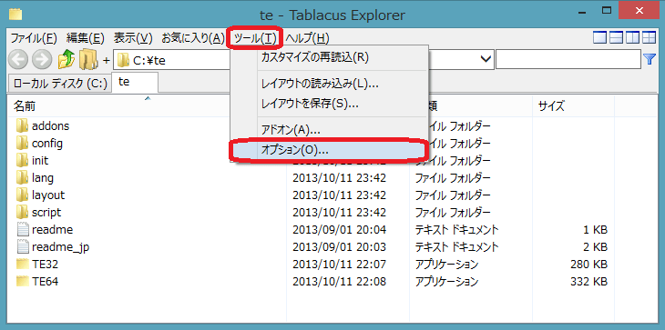
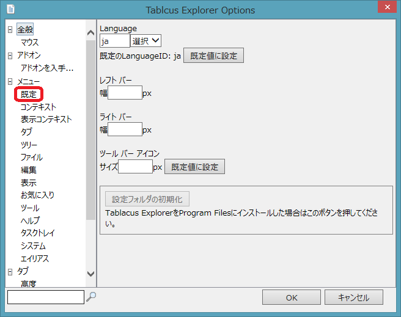
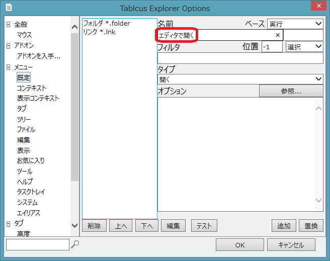
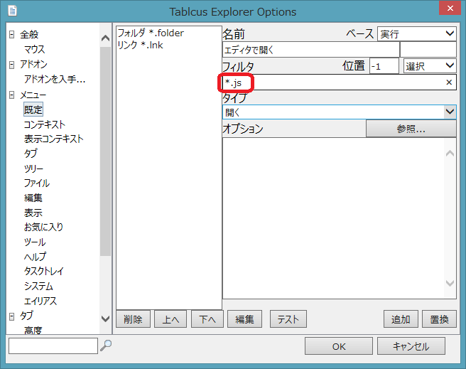
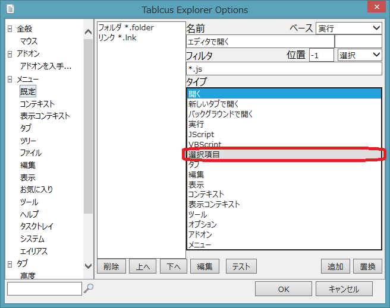
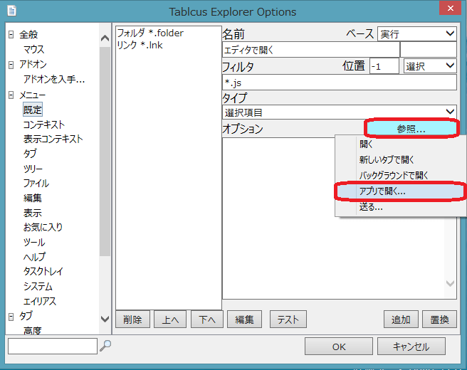
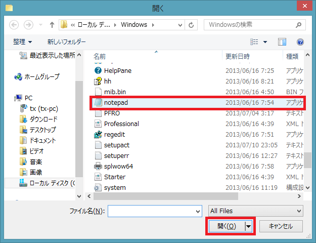
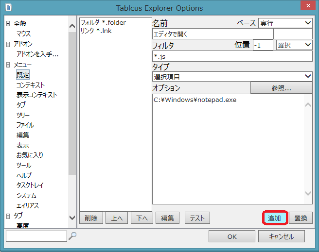
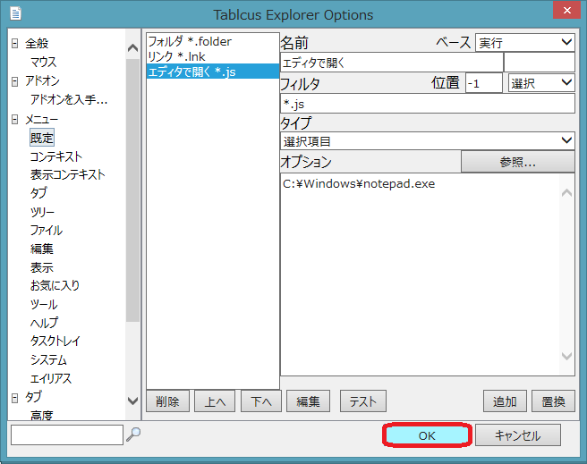

|
Tablacus Explorer 独自関連付けのカスタマイズ方法
|

|
Tablacus Explorerの独自関連付けはオプションの既定から設定します。
拡張子「js」のファイルに「エディタで開く」を追加してみましょう。
ツール→オプションを選択します。

メニューの「既定」を押します。

名前欄に「エディタで開く」と入力して下さい。

次にフィルタに「*.js」と入力して下さい。基本的に「*.拡張子」と入力します。複数ある場合は「*.js;*.vbs」の様に「;」で区切ります。

タイプを「選択項目」に変更します。

オプションの「参照...」を押して「アプリで開く...」を選びます。

エディタソフトを選択して「開く(O)」を押して下さい。

「追加」をクリックして既定（独自関連付け）にエディタで開くを追加します。

「OK」をクリックすると完了です。
